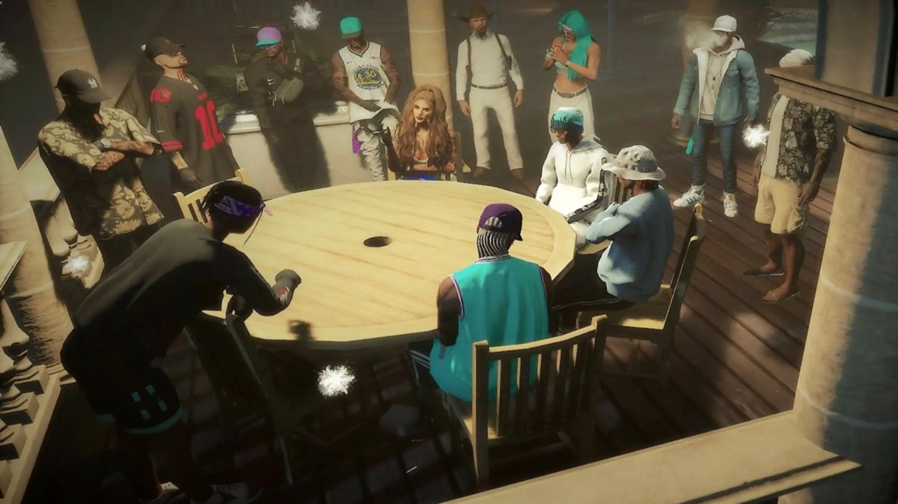

Build reputation
Complete legitimate and underground roleplay, work with contacts, and develop a track record tied to your character.

Reputation & progression
PixelPH progression is built around reputation, relationships, and information. Opportunities are earned through roleplay — not unlocked by a menu, a donation, or a shortcut.
That is the starting condition, and it is deliberate. Everything below happens to your character in the city, at the pace other people decide to trust you.
A face with no history. Doors are closed, and nobody has a reason to open them.
Somebody puts your name forward. Small work, watched closely, easy to lose.
You did what you said. People start speaking about you when you are not in the room.
Your track record travels ahead of you — the good parts and the rest of it.
Work that was never on any list becomes possible, because of who will vouch for you.
Instead of seeing every activity on day one, characters build trust and discover leads over time. Your decisions, contacts, and reputation determine which doors begin to open.
Complete legitimate and underground roleplay, work with contacts, and develop a track record tied to your character.
NPC and phone-based contacts can introduce opportunities when your reputation and previous actions support it.
Important clues, instructions, and discoveries can be saved in your character's notebook instead of disappearing after a session.
Higher-risk opportunities become available naturally as your character proves they can be trusted with more sensitive work.
The underground is designed as a connected progression instead of a collection of isolated robbery markers. Early activity may expose a clue, a contact, or a lead that points toward a more complex opportunity later.
Exact methods, clue locations, requirements, and procedures stay inside the city so discovery remains part of RP.
Clues and useful information can persist with your character in a notebook-style system. Pages can become part of planning, investigation, teamwork, and long-term storylines.
Higher reputation does not protect a character from police, consequences, loss, or server rules. It only represents earned trust and progression within supported systems.
Everyone does. Submit your application and the first contact you make will be in character.